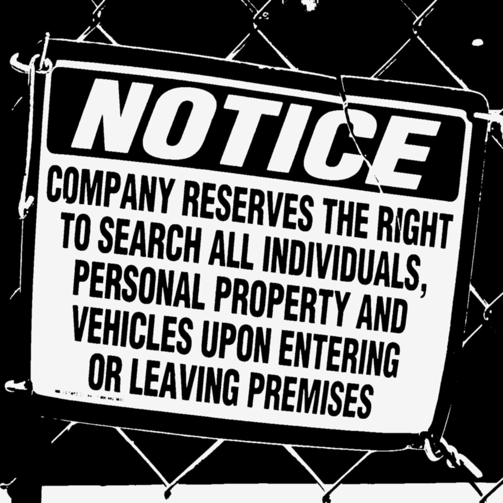

He Wept by Wallace Heller
Teasers
This is not entertainment.
Zero.
Ordinary lives.
Extraordinary stories.
Everybody's got somewhere they want to forget.
Everybody's got somewhere they want to call home.
Angel's Mercy.
The door to the alley was open, but an iron gate with three huge padlocks prevented anyone from getting in. You had to ask Mrs. Flores for the key to the bathroom—if she didn't know you, she pretended not to understand English.
» MORE »
3 AM.
Do you know how black the sky appears at 3AM?
Or how empty it can seem at three in the afternoon?
Departures.
Sometimes, you have to stand still in order to find what really moves you.
» MORE »
Check Out Time.
Female found unresponsive.
EMS en route.
Her Words Came Out in a Rush.
It's like what you do from 15 to 25 decides what you're going to do from 25 to 65.
I wish I had seen that. I wish somebody had told me.
Encounters.
He didn't have to wait very long or go very far.
» MORE » »
How Lucky He Is.
You know this isn't your fault, right? Everything that's happened I've watched you try to prevent. He doesn't realize how lucky he is to have you.
Grace Land.
I don't pray much.
Not sure what I believe I'm praying to.
Sometimes it boils down to just asking for help. I figure I've never gotten much of that, so asking for more would be pointless.
If He can't even deliver the basics, what's He good for?
» MORE »
Meaning of the Word.
The first time I fell in love and finally knew the meaning of the word was the first time I held him.
Here I Am.
It's been five years since I did the kind of thing I do when I get desperate. It's been ages since I hurt myself trying to feel something other than pain.
» MORE »
Porn Star.
He treated me as if I was expendable . I gave him two boys. He didn't want those either. He told me he wished he'd never gotten married and had become a porn star instead.
Jump.
This is not about a virus or a vaccine.
» MORE »
Someday It Will All Make Sense.
There's one last question that has to be asked.
It may not make sense at the moment, but someday it will.
What would you give to get your innocence back?
Language of the Illiterate.
What do we do now?
» MORE »
The Half of It.
The Half of It.
My husband said our marriage is like the Jerry Springer Show .
LOL . He doesn't know the half of it.
If he only knew.
My Masquerade.
Do you know what it's like to want something so badly that your throat feels tight and your skin crawls at the thought of not having it, because you know what it's like to go without, and that's no longer an option?
» MORE »
What If?
What if somebody showed you that the road you're on led nowhere ?
What if somebody gave you a glimpse, a hint, a moment of clarity before you got stuck in a life that you hate ?
Ready in Minutes.
There's only one thing left to do.
Choose.
» MORE »
The Fat Guy and the Little Boy Who Did Not Forget.
What the hell?
What can these bozos have to say that I haven’t heard already?
» MORE »
Waiting for Me.
It's me again. The same stains on the carpet. The same fake smiles. The same magazines with missing covers and pages stuck together.
How long can I go on wishing every moment of every day that things were different?
» MORE »
Where Are You Going?
Is this what is meant by coming full circle?
Or trying to pay it forward?
Or am I just kidding myself, because that's less painful that admitting that there is no hope at all, ever, anywhere.
» MORE »

White Ruffles.
Once upon a time, she believed in things too good to be true.
Soon enough the unkept promises stacked up like past due bills next to an overflowing ashtray.
It didn't start out that way. It never does.
Once upon a time, she wore...
» MORE »
Paw-paw.
A little girl sits on a porch holding something precious in her hands.
» MORE »